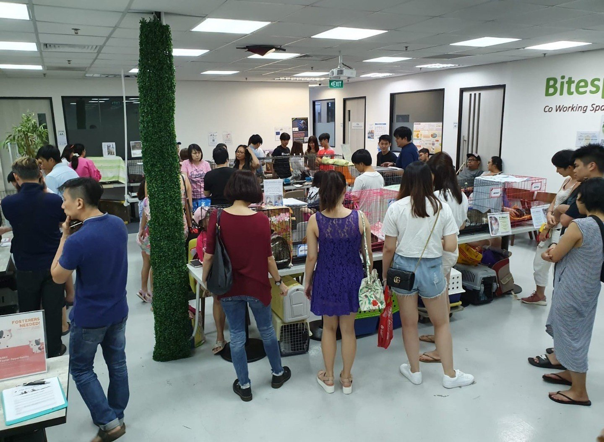

Time: 8am to 4pm Every Sunday
Shifts:
- 8am to 12nn
- 12nn to 4pm
Who:
Children below 13 must be guided by their parents
We welcome all cat lovers
Event Info:
Mass cleaning, interact with the cats
Location:
Our shelter (265 Boon Lay Dr, Block 265, Singapore 640265)
Goggle Maps
There will be weekly update for this event :)

Time: (TBC)
Age: 18 and above, Parents/Guardians must be present if child is below 18
Event Info:
Give a cat a second chance at life! If you're a cat lover, adopting a rescue cat can be one of the most rewarding experience you'll ever have.
Come down to our facility now and get yourself a loving animal
Time: (TBC)
Age: 12 and above
Event Info:
Giving food to stray cats